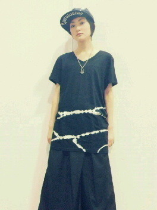

| 2013/04 16 Tue | 遅くなりましたが〜ヽ( ・∀・)ノ |
一昨日は名古屋にて個別握手会がありました

来て下さった皆さんありがとうございました!!
お留守番の皆さん!!
ブログ遅くなってごめんなさい

男装したかったんだけど、なんか結局やりませんでした〜ヽ(・∀・)ノ
代わりにずっと自分の趣味に浸っておりました。
そのお洋服がこれっ

ぼーいっしゅ!!
黒

いこまちゃんも何気みなみちゃんと同じ黒スカル時代に突入してます(笑)
とか言って！
ちゃんと女の子らしいお洋服もあるから今度着ますね〜
あー原宿行きたい!!
次の京都の握手はどうなることやら...
いこまちゃんはもう次を見てます。前に進んでいくんだって活動してます

しんじてるって言葉
嬉しいけど苦しい。
難しいですな〜
まぁっ!!
楽しく握手しましょうね!!
名古屋握手ありがとうございました!!
話は変わりますが！
銀魂よんだ人〜
内容言えないけど...
ヤバいっ!!
いこまちゃんはときめいたっ!!
恋をしたよっ！
あーかっこいいっ
読んだ方で共感したいっ!!
この気持ちっ!!
おふうっ
つっきー!!
ぐふっ
げふんげふん!!
あと新しくいこまちゃんのおいしいものレーダーにびんびん来るマンガを見つけたっ!!
(おいしいもの＝漫画とか漫画とかげふんげふん)
今日もそれ見てお腹いっぱいにしてお稽古に行きます♪
うん!!
なんかだんだん楽しくなってきました♪
じゃあぬっ
へばなっ!!
コメント(443)
2013/04/16 15:54